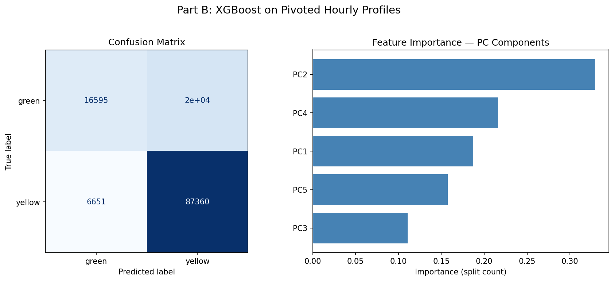
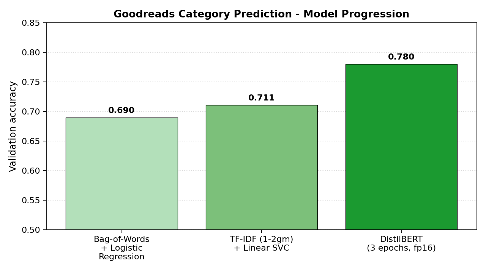

Hi! I'm Emily, an M.S. Data Science candidate at UC San Diego's Halıcıoğlu Data Science Institute, focusing on Artificial Intelligence and Data & Society. I hold a B.S. in Applied Mathematics with a Computer Science minor from UCSD's Jacobs School of Engineering.
I build scalable data pipelines, multi-model database systems, and interactive tools that turn complex data into clear recommendations. I currently TA Data Management (DSC 100) and previously studied text representation models as a Graduate Researcher at UCSD.
Outside of tech, I like to take long walks around the beach, enjoy a good coffee, and craft gifts for my loved ones.
Data Science Projects
RAG System for Documentation Q&A + Scientific-Claim Verification
Mar 2026 – Present · AI Engineering · In progress
Building a reproducible multi-config RAG pipeline (LangChain + RapidFire AI) over RapidFire AI documentation and the SciFact claim dataset, evaluated with a 20-question hand-labeled golden set scored via NDCG@k and reciprocal rank under a 2,000-token context budget.
Python · LangChain · RapidFire AI · OpenAI API · HuggingFace Embeddings · JupyterHub / DSMLP Datahub
Clinical Decision Data Platform: MediDB Drug Safety & Recommendation System
Jan 2026 – Mar 2026
Built a Dockerized ETL pipeline ingesting 500+ openFDA FAERS reports and 16 Synthea EHR tables into 4 polyglot databases (PostgreSQL, Neo4j, Qdrant, MongoDB), encoding clinical narratives as 768-dim BioLORD-2023 embeddings. Reduced drug-interaction checks from O(N²) SQL self-joins to O(1)-per-hop Neo4j traversals and shipped a 5-tab Streamlit dashboard unifying 4 parallel database queries into a 3-tier (Low/Moderate/High) risk report with full audit traceability.
Drug–drug cosine similarity in BioLORD-2023 embedding space: diagonal self-similarity = 1.0, with meaningful off-diagonal structure (e.g., atorvastatin–simvastatin cluster as statins).
Big Data Analytics on NYC Taxi: XGBoost Yellow-vs-Green Classification
Jan 2026 – Mar 2026
Engineered PCA-reduced hourly pickup profiles and tuned an XGBoost classifier across 131K NYC taxi trips, lifting accuracy 0.62 → 0.95 and macro-F1 0.62 → 0.94 (minority green-taxi recall 0.45 → 0.88), validated with a 30-replicate bootstrap (95% CI ±0.004). Streamlined AWS S3 retrieval across 400+ parquet files, cutting pipeline latency from 30 min to under 10 min.

Part B XGBoost on pivoted hourly profiles: confusion matrix (left) shows strong diagonal for both yellow and green cabs; PC-component feature importance (right) highlights PC2 and PC4 as the top drivers.
Ranked top 22% of 1,600 colleagues in a competitive ML evaluation by designing and optimizing predictive models for binary classification, multi-class classification, and regression under performance and validation constraints. Increased categorical prediction accuracy by ~120% through feature engineering, hyperparameter tuning, and transformer-based embeddings.

Goodreads category-prediction accuracy across three model iterations: BoW + LogReg (0.690) → TF-IDF (1–2gm) + Linear SVC (0.711) → DistilBERT fine-tuned (0.780).
San Diego Blue Line Trolley: Property Values, Police Proximity & Crime Rates
Spring 2024
Analyzed the relationship between San Diego Blue Line Trolley stops, surrounding property values, police station proximity, and crime incident rates; produced an interactive Tableau dashboard for stakeholder-facing insights.
Interactive Tableau dashboards exploring education outcomes (field of study, starting salary, gender splits) and HR analytics (employment types, satisfaction trends over time).
AWARDS & RECOGNITION
Teaching Assistant Tuition Remission
Grand Award: $7,124
Awarded for serving as a graduate TA in the Halıcıoğlu Data Science Institute.
Shores Scholarship
Grand Award: $119,016
Awarded for academic excellence and leadership potential during undergraduate studies.
Provost Honors
Awarded multiple quarters for maintaining quarterly GPA in the top percentile of the college.
Backpack to Briefcase — Debate Champion
Cash Award: $100
Won first place in the Backpack to Briefcase professional debate competition, earning a $100 cash prize for argumentation, delivery, and rebuttal under time pressure.